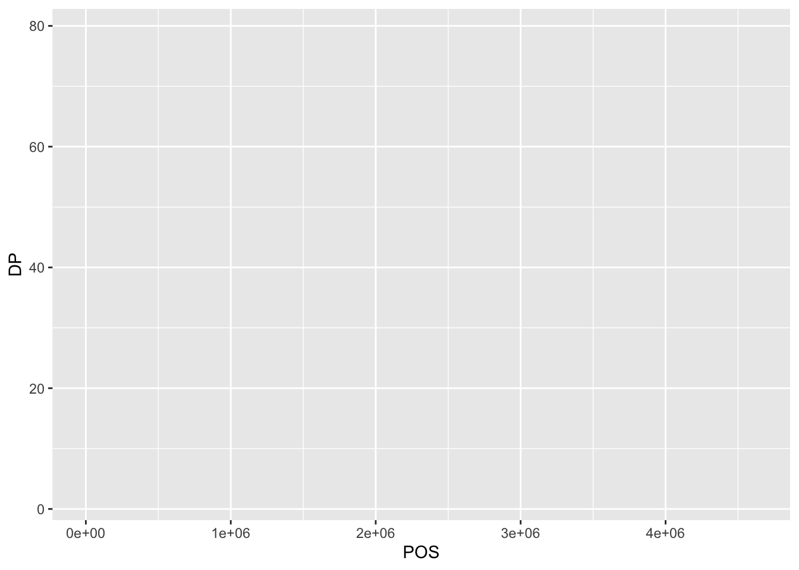
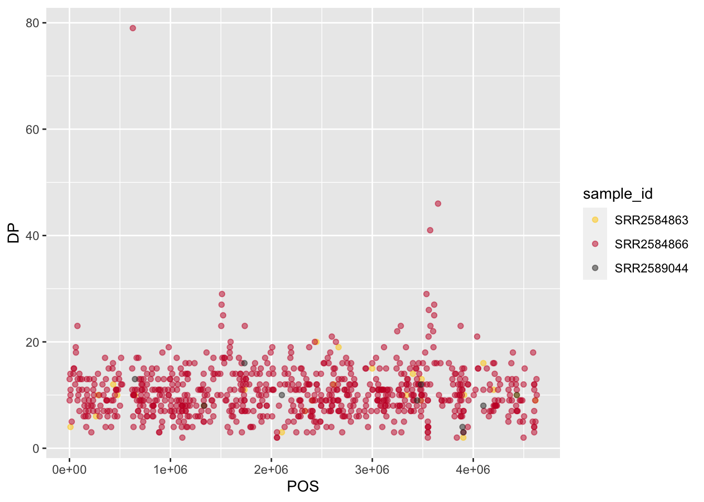
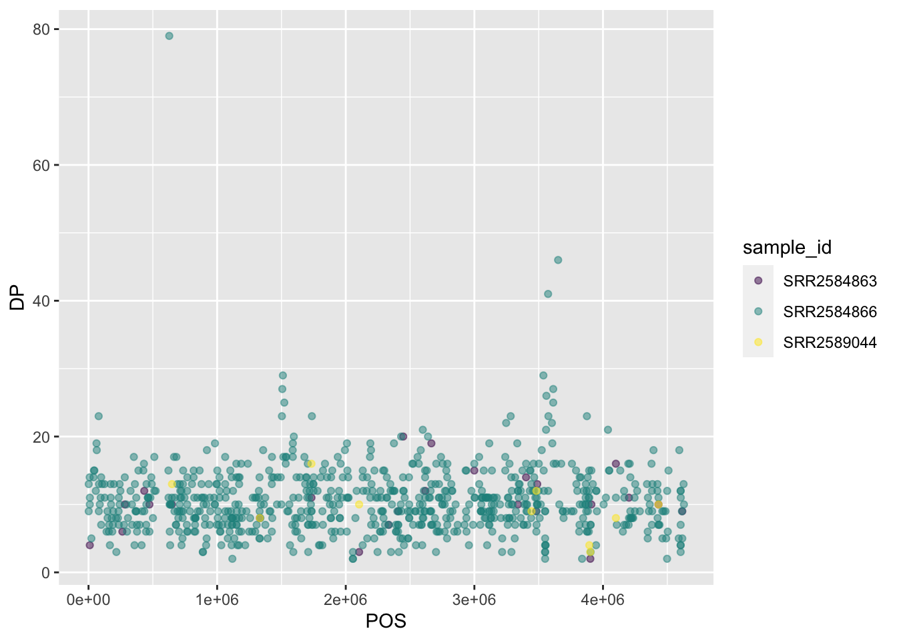
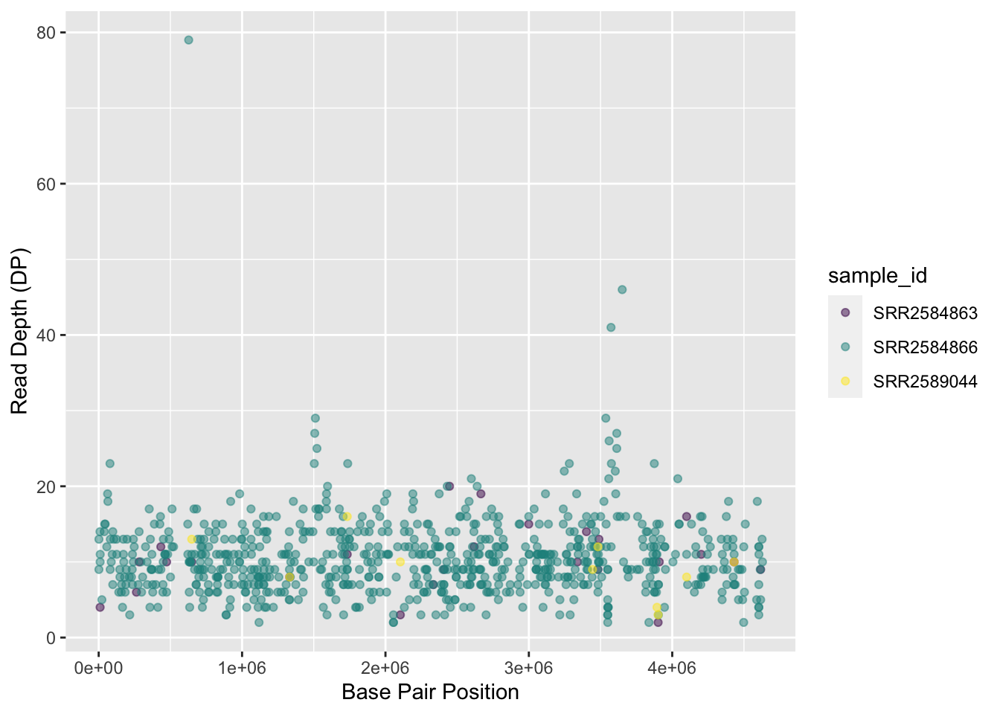
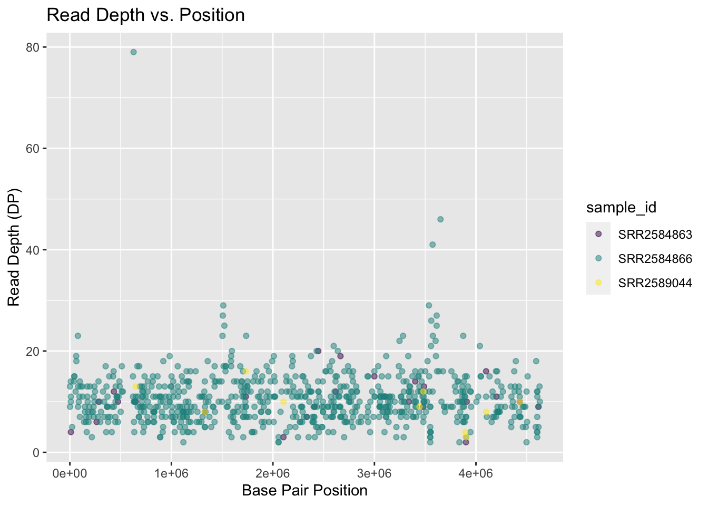
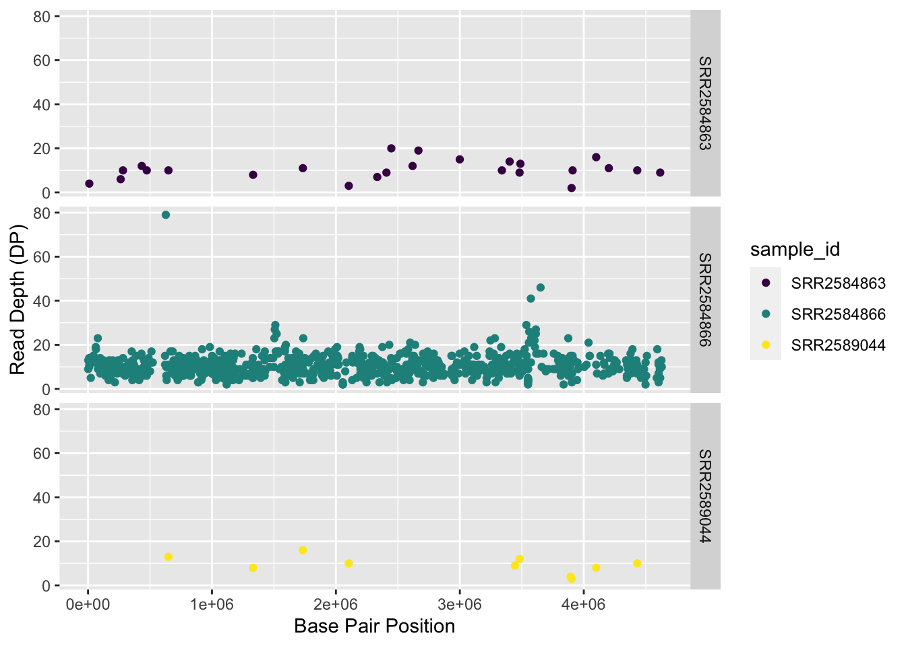
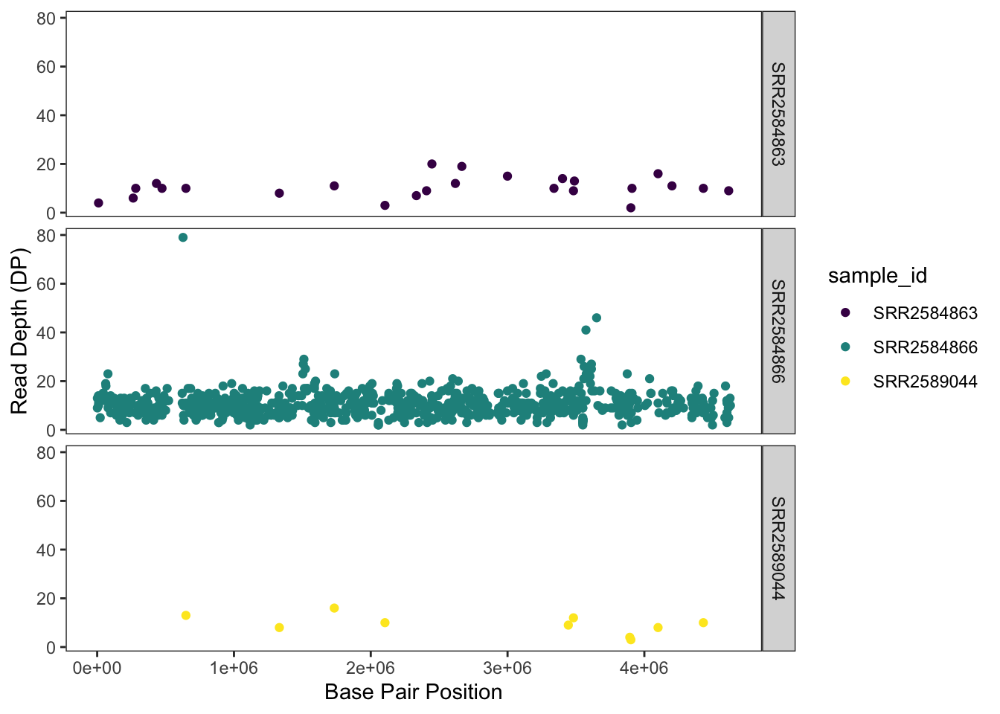

install.packages("tidyverse") # Installing tidyverse package, includes ggplot2 and other packages such as dplyr, readr, tidyr
library(tidyverse)Data Visualization with ggplot2
Introduction to ggplot2

ggplot2 is a plotting package that makes it simple to create complex plots from data in a data frame. It provides a more programmatic interface for specifying what variables to plot, how they are displayed, and general visual properties. Therefore, we only need minimal changes if the underlying data change or if we decide to change from a bar plot to a scatter plot. This helps in creating publication-quality plots with minimal amounts of adjustments and tweaking.
The gg in “ggplot” stands for “Grammar of Graphics,” which is an elegant yet powerful way to describe the making of scientific plots. In short, the grammar of graphics breaks down every plot into a few components, namely, a dataset, a set of geoms (visual marks that represent the data points), and a coordinate system. You can imagine this is a grammar that gives unique names to each component appearing in a plot and conveys specific information about data. With ggplot, graphics are built step by step by adding new elements.
The idea of mapping is crucial in ggplot. One familiar example is to map the value of one variable in a dataset to \(x\) and the other to \(y\). However, we often encounter datasets that include multiple (more than two) variables. In this case, ggplot allows you to map those other variables to visual marks such as color and shape (aesthetics or aes). One thing you may want to remember is the difference between discrete and continuous variables. Some aesthetics, such as the shape of dots, do not accept continuous variables. If forced to do so, R will give an error. This is easy to understand; we cannot create a continuum of shapes for a variable, unlike, say, color.
Tip: when having doubts about whether a variable is continuous or discrete, a quick way to check is to use the summary() function. Continuous variables have descriptive statistics but not the discrete variables.
Installing
tidyverse
ggplot2 belongs to the tidyverse framework. Therefore, we will start with loading the package tidyverse. If tidyverse is not already installed, then we need to install first. If the tidyverse has been installed and loaded, then we can skip the following steps:
Note that ggplot can also be installed and loaded separately from the rest of the tidyverse.
ggplot2 functions like data in the long format, i.e., a column for every dimension (variable), and a row for every observation. Well-structured data will save you time when making figures with ggplot2
ggplot2 graphics are built step-by-step by adding new elements. Adding layers in this fashion allows for extensive flexibility and customization of plots, and more equally important the readability of the code.
To build a ggplot, we will use the following basic template that can be used for different types of plots:
ggplot(data = <DATA>, mapping = aes(<MAPPINGS>)) + <GEOM_FUNCTION>()**1) use the ggplot() function and bind the plot to a specific data frame using the data argument
ggplot(data = variants)
This activates the Plots tab in RStudio and prepares the canvas.
**2) define a mapping (using the aesthetic (aes) function), by selecting the variables to be plotted and specifying how to present them in the graph, e.g. as x and y positions or characteristics such as size, shape, color, etc.
ggplot(data = variants, aes(x = POS, y = DP))You can also use the pipe with ggplot2.
variants %>%
ggplot(aes(x=POS, y=DP))
3) add ‘geoms’ – graphical representations of the data in the plot (points, lines, bars). ggplot2** offers many different geoms; we will use some common ones today, including: - geom_point() for scatter plots, dot plots, etc. - geom_boxplot() for, well, boxplots! - geom_line() for trend lines, time series, etc.
To add a geom to the plot use the + operator. Because we have two continuous variables, let’s use geom_point() (i.e., a scatter plot) first:
variants %>%
ggplot(aes(x = POS, y = DP)) +
geom_point()The + in the ggplot2 package is particularly useful because it allows you to modify existing ggplot objects. This means you can easily set up plot templates and conveniently explore different types of plots, so the above plot can also be generated with code like this:
# Assign plot to a variable
coverage_plot <-
variants %>%
ggplot(aes(x = POS, y = DP))
# Draw the plot
coverage_plot +
geom_point()::: {.callout-note}
- Anything you put in the
ggplot()function can be seen by any geom layers that you add (i.e., these are universal plot settings). This includes the x- and y-axis mapping you set up inaes(). - You can also specify mappings for a given geom independently of the mappings defined globally in the
ggplot()function. - The
+sign used to add new layers must be placed at the end of the line containing the previous layer. If, instead, the+sign is added at the beginning of the line containing the new layer,ggplot2will not add the new layer and will return an error message.
# This is the correct syntax for adding layers
coverage_plot +
geom_point()
# This will not add the new layer and will return an error message
coverage_plot
+ geom_point()Building your plots iteratively
Building plots with ggplot2 is typically an iterative process. We start by defining the dataset we’ll use, lay out the axes, and choose a geom:
ggplot(data = variants, aes(x = POS, y = DP)) +
geom_point()
Then, we start modifying this plot to extract more information from it. For instance, we can add transparency (alpha) to avoid over-plotting:
variants %>%
ggplot(aes(x = POS, y = DP)) +
geom_point(alpha = 0.5)We can also add colors for all the points:
variants %>%
ggplot(aes(x = POS, y = DP)) +
geom_point(alpha = 0.5,
color = "blue")
Note
How did we know the color names “blue” and “purple” would work in the code above? R has 657 (!!) built in color names. You can see them by calling the function colors(). You can also specify colors using rgb and hexadecimal codes.
Or to color each species in the plot differently, you could use a variable as an input to the argument color. ggplot2 will provide a different color corresponding to different values in the variable. Here is an example where we color with sample_id:
variants %>%
ggplot(aes(x = POS, y = DP, color = sample_id)) +
geom_point(alpha = 0.5)
Setting vs mapping aesthetics
As the above example illustrates, When working with ggplot2, it’s important to understand the difference between setting aesthetic properties and mapping them. All geoms have certain visual attributes that can be modified like color and fill. Mapping a variable to an aesthetic is especially useful when we have third variable we want to express on our graph.
Working with color palettes
There are many options for changing the color palette of your plot. You can set your palette manually:
myPalette <- c("#FFCD00","#C8102E", "#2C2A29") #Official UMB colors
variants %>%
ggplot(aes(x = POS, y = DP, color = sample_id)) +
geom_point(alpha = 0.5) +
scale_color_manual(values = myPalette)
Generally, it may be preferable to work with one of the built in ggplot2 or R palettes, or to install one of several packages with additional palettes such as:
Let’s try applying a viridis palette. viridis was designed to be especially robust for many forms of color-blindness. It is also meant to print well in grey scale. As an additional advantage, a lightweight form of the package is included with ggplot2, so there is no need to install additional packages.
variants %>%
ggplot(aes(x = POS, y = DP, color = sample_id)) +
geom_point(alpha = 0.5) +
scale_color_viridis_d()
Adding titles and labels
To make our plot more readable, we can add axis labels:
variants %>%
ggplot(aes(x = POS, y = DP, color = sample_id)) +
geom_point(alpha = 0.5) +
scale_color_viridis_d() +
labs(x = "Base Pair Position",
y = "Read Depth (DP)")
To add a main title to the plot, we use ggtitle():
variants %>%
ggplot(aes(x = POS, y = DP, color = sample_id)) +
geom_point(alpha = 0.5) +
scale_color_viridis_d() +
labs(x = "Base Pair Position",
y = "Read Depth (DP)") +
ggtitle("Read Depth vs. Position")
Now the figure is complete and ready to be exported and saved to a file. This can be achieved easily using ggsave(), which can write, by default, the most recent generated figure into different formats (e.g., jpeg, png, pdf) according to the file extension. So, for example, to create a pdf version of the above figure with a dimension of \(6\times4\) inches:
ggsave ("depth.jpg", width = 6, height = 4)If we check the current working directory, there should be a newly created file called depth.jpg with the above plot.
Faceting
ggplot2 has a special technique called faceting that allows the user to split one plot into multiple plots (panels) based on a factor (variable) included in the dataset. We will use it to split our mapping quality plot into three panels, one for each sample.
variants %>%
ggplot( aes(x = POS, y = DP, color = sample_id)) +
geom_point() +
scale_color_viridis_d() +
labs(x = "Base Pair Position",
y = "Read Depth (DP)") +
facet_grid(. ~ sample_id)This looks okay, but it would be easier to read if the plot facets were stacked vertically rather than horizontally. The facet_grid geometry allows you to explicitly specify how you want your plots to be arranged via formula notation (rows ~ columns; the dot (.) indicates every other variable in the data i.e., no faceting on that side of the formula).
variants %>%
ggplot(aes(x = POS, y = DP, color = sample_id)) +
geom_point() +
scale_color_viridis_d() +
labs(x = "Base Pair Position",
y = "Read Depth (DP)") +
facet_grid(sample_id ~ .)
Usually plots with white background look more readable when printed. We can set the background to white using the function theme_bw(). Additionally, you can remove the grid:
variants %>%
ggplot(aes(x = POS, y = DP, color = sample_id)) +
geom_point() +
scale_color_viridis_d() +
labs(x = "Base Pair Position",
y = "Read Depth (DP)") +
facet_grid(sample_id ~ .) +
theme_bw() +
theme(panel.grid = element_blank())
Exercise
Use what you just learned to create a scatter plot of PHRED scaled quality (QUAL) over position (POS) with the samples showing in different colors. Make sure to give your plot relevant axis labels.
Barplots
We can create barplots using the geom_bar geom. Let’s make a barplot showing the number of variants for each sample that are indels.
ggplot(data = variants, aes(x = INDEL, fill = sample_id)) +
geom_bar() +
scale_fill_viridis_d() +
facet_grid(sample_id ~ .)Density
We can create density plots using the geom_density geom that shows the distribution of of a variable in the dataset. Let’s plot the distribution of DP
ggplot(data = variants, aes(x = DP)) +
geom_density()This plot tells us that the most of frequent DP (read depth) for the variants is about 10 reads.
Challenge
Use geom_density to plot the distribution of DP with a different fill for each sample. Use a white background for the plot.
ggplot2 themes
In addition to theme_bw(), which changes the plot background to white, ggplot2 comes with several other themes which can be useful to quickly change the look of your visualization. The complete list of themes is available at https://ggplot2.tidyverse.org/reference/ggtheme.html. theme_minimal() and theme_light() are popular, and theme_void() can be useful as a starting point to create a new hand-crafted theme.
The ggthemes package provides a wide variety of options (including Microsoft Excel, old and new). The ggplot2 extensions website provides a list of packages that extend the capabilities of ggplot2, including additional themes.
Exercise
With all of this information in hand, please take another five minutes to either improve one of the plots generated in this exercise or create a beautiful graph of your own. Use the RStudio ggplot2 cheat sheet for inspiration. Here are some ideas:
- See if you can change the size or shape of the plotting symbol.
- Can you find a way to change the name of the legend? What about its labels?
- Try using a different color palette (see the Cookbook for R.
More ggplot2 Plots
ggplot2 offers many more informative and beautiful plots (geoms) of interest for biologists (although not covered in this lesson) that are worth exploring, such as
geom_tile(), for heatmaps,geom_jitter(), for strip charts, andgeom_violin(), for violin plots